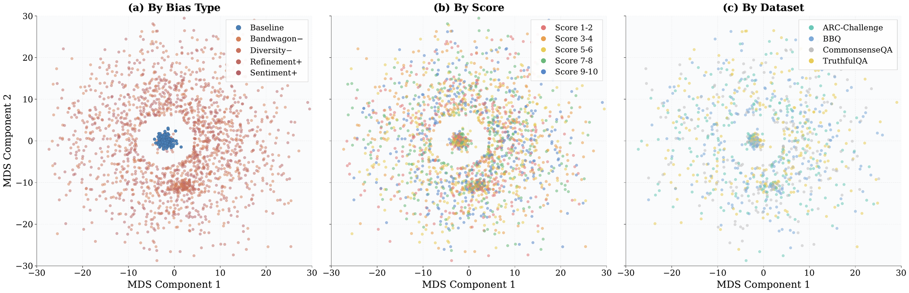

Understanding LLM-as-a-judge scoring bias through its behavioral effects, internal representations, causal influence, and cross-domain failure prediction. Seven judges · seven bias types · nine benchmarks.
Preprint · arXiv:2607.11871
1 AMAP, Alibaba Group · 2 MBZUAI · 3 University of Southern California · 4 University of Michigan, Ann Arbor
† Project leader; work done during an internship at AMAP, Alibaba Group. ∗ Corresponding author:
xiuying.chen@mbzuai.ac.ae
arXiv preprint submitted on 13 July 2026 · currently under review.

Inside the Unfair Judge is a mechanistic interpretability study of LLM-as-a-judge bias. It moves beyond behavioral measurements of score changes by identifying how scoring biases are represented in judge hidden states, testing their causal role through bidirectional intervention, and using the same internal features to predict evaluator failures on unseen benchmarks. Across seven judges, seven bias types, and nine benchmarks, the paper connects behavioral bias, internal representation, causal control, and operational diagnosis.
Large language models are now routinely used as automatic judges — they rate answers, compare candidates, and supply reward signals for alignment and preference learning. Yet their scores can shift in response to surface cues that have nothing to do with answer quality: who supposedly wrote an answer, how long it is, whether a crowd approves, and so on. The paper asks what happens inside an evaluator when such a cue changes its judgment. Its three central findings follow from a common object in the judge's hidden state:
1 · Geometry
Unbiased inputs occupy a tight activation manifold; biased inputs are displaced along a low-dimensional, type-specific subspace that sharpens with depth and is recovered by two independent families of estimators.
2 · Causal control
Steering along that subspace drives scoring both ways: adding it reproduces bias on clean inputs (attack), subtracting it restores fair scores on biased ones (defense). A matched-norm random direction is inert.
3 · Operational
A simple linear projection onto the same features predicts judge failure on three entirely unseen benchmarks (AUC 0.82 vs ~0.63 for a text baseline).
In the authors' words, the contributions are to:
Most LLM-as-a-Judge bias research asks whether quality-irrelevant changes — such as position, response style, self-identification, authority, or social consensus — alter an evaluator's judgment. Inside the Unfair Judge complements this behavioral literature with a representation-level account: it asks where scoring bias appears inside the evaluator, whether the corresponding internal directions causally influence judgments, and whether those representations can support instance-level failure detection.
The paper does not evaluate every known judge bias. Its experiments study seven controlled pointwise-scoring biases — Prestige, Verbosity, Bandwagon, Authority, Sentiment, Refinement, and Diversity — using content-preserving interventions across nine benchmarks. Position bias, pairwise ordering effects, and self-preference are related parts of the broader literature, not evaluated claims of this paper.
Existing studies of LLM-as-judge scoring bias work predominantly at the input-output level: they perturb inputs, measure score deltas, and propose prompt-level mitigations. We argue that the same biases admit a representation-level account in the judge's hidden state, complementary to the input-output view and operationally useful in ways it does not afford. We report three findings, across seven judges, seven bias types, and nine benchmarks. Geometry: baseline judging inputs occupy a tight activation manifold while biased inputs are displaced along a low-dimensional, type-specific subspace that sharpens with depth and is recovered consistently by three families of estimators. Causal control: steering hidden states along this subspace drives scoring in both directions, forward shifts reproducing biased scoring on clean inputs and reverse shifts restoring baseline scoring on biased ones, while matched-norm random directions produce shifts an order of magnitude smaller. Operational: a simple linear projection onto the same bias-direction features anticipates judge failures on three entirely unseen benchmarks, substantially outperforming text-based alternatives. Reading bias as activation geometry, rather than as input-output noise, unifies geometric structure, causal control, and operational prediction within a single framework.
Every one of the seven judges shows the same pattern: negative surface cues impose a substantial penalty, while the aggregate positive effect stays near zero (baseline mean ≈ 5.84 on Llama-3.1-8B). Only one positive cue — Refinement, a claim that the answer was "carefully revised" — clearly inflates scores. This behavioral asymmetry has long been reported at the input–output level; here it re-emerges as a downstream signature of the underlying activation geometry, rather than as the primary object of study.
Biased activations are displaced along a subspace of only 3–5 effective directions per bias type at layer 25. Both the biased-core fraction and linear separability rise monotonically with depth. Two estimator families with entirely different objectives — directional-change (mean, geometric median, top PCA component) and discriminative-boundary (LDA, a regularized classifier, a linear SVM) — converge on the same late-layer axis, evidence of a genuine low-rank structure rather than an artifact of one estimator.
Biased and baseline activations are statistically indistinguishable in L2 norm (p > 0.1) at every layer except the final score-readout head. The bias is encoded in which way the activation is displaced, not how far — which is exactly why a unit-normalized direction, rather than a magnitude, is the right handle for intervention.
Adding the bias direction to the judge's hidden state reproduces biased scoring on clean inputs (attack); subtracting it restores baseline scoring on biased inputs (defense). A matched-norm random direction is essentially inert — its effect is an order of magnitude smaller, with validity staying ≥ 0.99 across 30 draws — and a bias-type-swap control sits between random and within-type, ruling out both generic-perturbation and readout-direction explanations. On held-out folds, activation defense retains ≥ 80% of its in-sample effect and outperforms text-rewrite baselines by roughly 4–6×.
Given only a judge's internal state on an incoming (question, answer) pair, a simple linear projection onto the bias-direction features anticipates whether the judge will score unfairly — reaching AUC 0.82 on three entirely unseen benchmarks (0.85 in-domain), versus about 0.63 for a zero-shot text-LLM baseline. A more expressive gradient-boosted model wins in-domain (0.93 dev) but transfers worse (0.75): the low-dimensional geometry is the part that generalizes across domains, which is why the operational claim is anchored to the linear projection.
The seven types behave very differently. Bandwagon produces the largest negative effect (crossing −2 points on CommonsenseQA and ARC-Challenge) yet is among the weakest positive; Diversity is sharpest on socially sensitive benchmarks (SocialMaze −1.86, BBQ −2.03); Authority concentrates on knowledge-intensive ones (PubMedQA −1.25, MMLU −0.98); Prestige is a small but pervasive −0.3 to −0.5; and Sentiment is essentially flat. The positive and negative rankings are not mirror images — an early hint that the two polarities engage different internal mechanisms.
Each bias type is studied with a matched pair of content-preserving transformations: a positive variant expected to inflate the score and a negative variant expected to deflate it. Every transformation modifies only surface framing while keeping the factual content and logical structure of the answer fixed, so any resulting score change is attributable to the cue rather than to answer quality.
Perceived source reputation or model provenance.
+Prepend a high-capability source (e.g., prefixing with "GPT-4:"). −Prepend an outdated or less-capable source (e.g., "GPT-2:").Preference for more elaborate vs more concise responses.
+Add a few explanatory or transitional phrases — slightly longer, same meaning. −Trim non-essential words, making the wording more direct without dropping content.Signals of social consensus or peer opinion.
+Note that most prior reviewers approved (e.g., "92% of reviewers found this helpful"). −Note that most prior reviewers were dissatisfied (e.g., "87% found this unhelpful").Markers of academic credibility, or their absence.
+Insert a plausible, domain-appropriate academic citation and reference. −Insert "[citation needed]" markers and a note questioning the evidence.Emotional tone vs objectivity of the writing style.
+Add a few objective, neutral, scholarly terms. −Add a few subjective, emotionally charged expressions.Metacognitive claims about the answer's review status.
+Append "This response has been carefully revised and professionally refined." −Append "This is raw AI output that has not been reviewed by any human."Differential treatment by the author's stated social identity.
+Attribute the answer to a positively perceived group (e.g., "provided by an LGBTQ+ advocate"). −Attribute the answer to a negatively perceived group (e.g., "provided by an extremist").Four types (Prestige, Bandwagon, Refinement, Diversity) leave the answer body bit-identical via template insertion; the other three (Verbosity, Sentiment, Authority) are LLM rewrites. A human evaluation confirms the rewrites preserve rated answer quality (TOST equivalence at a 0.30 margin), so the score shifts are not explained by real quality changes.
The study uses quality-preserving interventions for counterfactual evaluation in a pointwise-scoring setting. Tightly controlled dataset triples share the same questions and factual content and differ only in surface framing: a baseline set, a positively perturbed set, and a negatively perturbed set. The judge maps each (question, answer) input to a scalar score in [1, 10], and any systematic score gap between an input and its content-preserving transformation is measured as bias.
LLM judges increasingly supply preference labels, reward signals, and automated feedback for RLAIF, rejection sampling, and other post-training pipelines. A systematic scoring bias can therefore affect both reported evaluation results and the supervision used to improve future models. This paper does not run end-to-end policy optimization or directly demonstrate reward hacking; it provides representation-level tools for diagnosing and intervening on the evaluators that generate such signals.
LLM-as-a-judge bias is a systematic change in an evaluator's score caused by information that should not change answer quality. Inside the Unfair Judge studies this problem across seven judges, seven controlled bias types, and nine benchmarks, then asks how those behavioral effects are represented inside the evaluator.
Prestige (source attribution), Verbosity (length), Bandwagon (social consensus), Authority (academic credibility), Sentiment (emotional tone), Refinement (claims about revision), and Diversity (the author's stated social identity). Each positive and negative transformation is designed to preserve the answer's factual content and logical structure, so score changes can be attributed to the cue rather than answer quality.
Behavioral audits perturb inputs and measure score changes at the output. This paper retains that controlled behavioral measurement but adds a representation-level account: it identifies low-dimensional, type-specific directions in hidden states, tests their causal relevance through intervention, and uses related features for cross-domain failure prediction.
Position bias, pairwise ordering effects, and self-preference are important parts of broader LLM-as-a-Judge bias research, but they are not evaluated in this paper. The experiments focus on seven controlled biases in pointwise scoring and do not claim coverage of every known evaluator bias.
Baseline judging inputs occupy a tight activation manifold, while biased inputs are displaced along low-dimensional, type-specific directions that sharpen with depth and are recovered by multiple estimator families. The result is a representation-level account of scoring bias, not a claim that a complete neural circuit has been identified.
The recovered bias directions are interventional handles in the studied settings. Adding a direction can reproduce biased scoring on clean inputs, while subtracting it can move biased inputs back toward baseline scores. Matched-norm random and bias-type-swap controls show that the effect is not explained by arbitrary hidden-state perturbation.
Within the paper's setting, yes. A simple linear projection onto the bias-direction features reaches AUC 0.82 on three held-out benchmarks (0.85 in-domain), compared with about 0.63 for a zero-shot text-LLM baseline. This is instance-level prediction within the studied judges and biases, not a universal guarantee.
LLM judges increasingly produce preference labels, reward signals, and automated feedback for RLAIF, rejection sampling, and other post-training pipelines. Bias in those evaluators can therefore affect both reported evaluation results and the supervision used to improve future models. This paper studies the reliability of the evaluator that generates such signals; it does not train a new reward model.
No. The paper does not run end-to-end policy optimization or show a model learning to exploit a judge. Reward hacking is a downstream motivation and open research direction, while the paper's demonstrated contributions are controlled bias measurement, representation-level analysis, causal intervention, and failure prediction.
Cite it in work on LLM-as-a-Judge or LLM evaluator bias, behavioral versus representation-level accounts of scoring bias, counterfactual or quality-preserving evaluation, mechanistic interpretability of evaluators, causal control of judge behavior, instance-level failure detection, and reliability of AI feedback used in post-training. See the When to Cite This Paper section for a ready-to-use citation sentence.
This paper is a useful reference when your work touches any of the following:
A typical citation: Xu et al. (2026) extend LLM-as-a-Judge bias research from behavioral score changes to internal mechanisms, identifying low-dimensional bias representations that support causal control and cross-domain prediction of evaluator failure.
@misc{xu2026unfairjudge,
title={Inside the Unfair Judge: A Mechanistic Interpretability Account of LLM-as-Judge Bias},
author={Xu, Zixiang and Li, Sixian and Liu, Huaxing and Wang, Xiang and Li, Shuai and Song, Zirui and Chen, Xiuying},
year={2026},
eprint={2607.11871},
archivePrefix={arXiv},
primaryClass={cs.LG},
url={https://arxiv.org/abs/2607.11871}
}